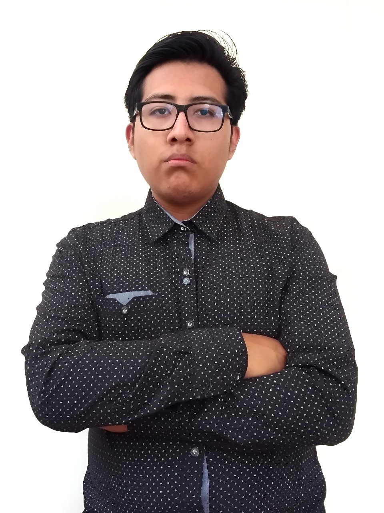

Ingeniero Civil + Investigador I+DFusionando ingeniería estructural física con IA avanzada y Gemelos Digitales.
Sistema de Monitoreo de Salud Estructural (SHM) utilizando PINN-GNN (Physics-Informed Graph Neural Networks). Detecta daño estructural analizando señales de acelerómetros transformadas con Wavelets.
Software completo de análisis de tuberías ante ondas sísmicas.
v1 (Diseño): Interfaz Tkinter con gráficos polares y análisis por tramos.
v2 (Investigación): Simulador Monte Carlo para confiabilidad y curvas de fragilidad.
Suite de ingeniería hidráulica programada en PPL (Pascal). Incluye librería GUI personalizada táctil y algoritmos iterativos (Secante/Standard Step) para curvas de remanso.
Vigilancia autónoma basada en Hardware Reconfigurable (FPGA). Procesamiento de visión en el borde con Tang Nano 1K (Verilog) y ESP32-CAM.
Detección de Grietas (SegFormer) y EPP (YOLOv8) con métricas automáticas. Alcanza un mAP@0.5 de 90.7% en entornos de obra reales.
Archon: Asistente de voz con cerebro OpenAI (GPT) + speech recognition.
AgroTech: CNN para detección de enfermedades en cultivos de Papa.